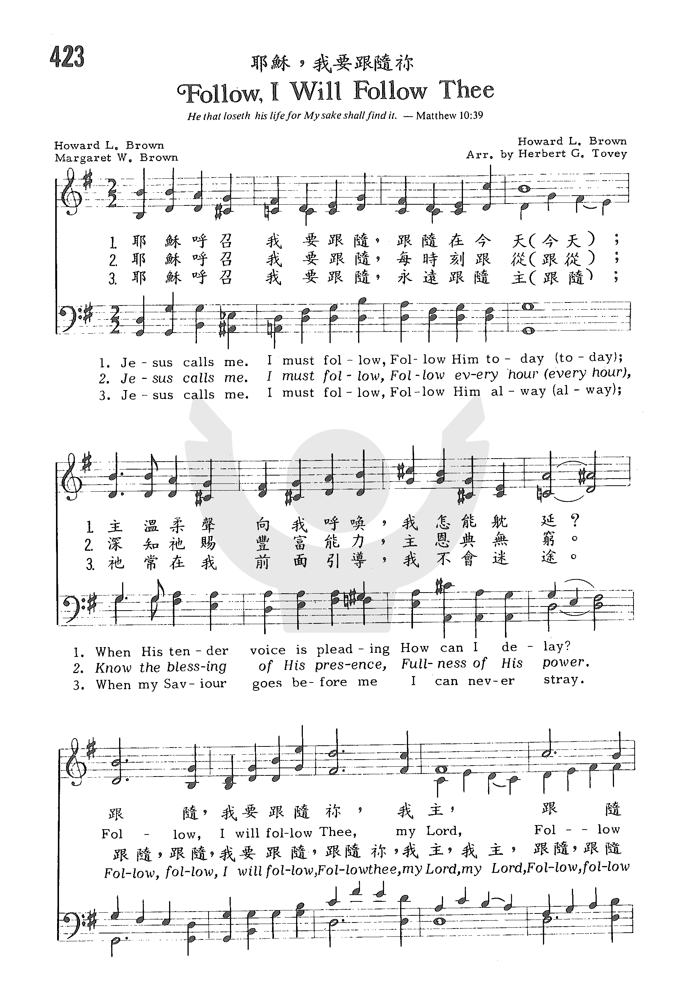
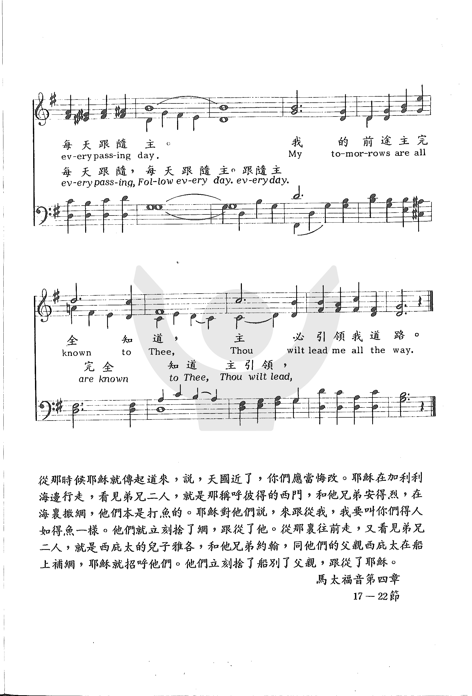

|
|
|
|
1) Jesus calls me; I must follow, Follow, I will follow Thee, my Lord, 2) Jesus calls me ; I must follow,
|
耶穌呼召我要跟隨，跟隨在今天(今天)；
|
|
https://www.zanmeishige.com/tab/25998.html?songbook=1&index=423


|
|
|
|
|

0980
Follow I Will Follow Thee 耶稣，我要跟随祢
| Text: | Follow, I Will Follow Thee |
| Author: | Howard L. Brown, 1889-1965 |
| Author: | Margaret W. Brown, 1892- |
| Tune: | [Jesus calls me I must follow] |
| Composer: | Howard L. Brown, 1889-1965 |
| Composer: | Margaret W. Brown, 1892- |
| Short Name: | Howard L. Brown |
| Full Name: | Brown, Howard L., 1889-1965 |
| Birth Year: | 1889 |
| Death Year: | 1965 |
Howard L. Brown was director of California Christian Endeavor (international church youth organization) between 1930-1940. In those years this was a large organization, especially in LA-Orange County area. He wrote many spiritual songs along with his wife Margaret.
Words: Margaret W. Brown (b. _____, 1892; d. _____)
Music: Howard L. Brown (b. _____, 1889; d. _____, 1965)
Links:
Wordwise Hymns (none)
The Cyber Hymnal (Margaret
Brown)
Hymnary.org
Note: Sometimes this hymn is called Follow, I Will Follow Thee. We know only a little about the author and composer. Howard Brown was the director of Christian Endeavor (an international youth organization), in California, between 1930-1940. He wrote many hymns along with his wife Margaret, and they collaborated in the writing of the present song. (If you have more information about the Browns, I would be glad to hear from you.)
Philosophers, even back in Aristotle’s time (384-322 BC), have studied cause and effect. That has to do with the way an event or set of conditions leads to a particular result. Throw a ball in the air (a cause) and we’d expect it to come down (the effect). Flip a light switch, at least under normal conditions, that the light will come on.
Or, we can look at it the other way. By examining the effect, we can reason back to the cause. Detectives do that when they examine a crime scene for clues, and try to answer the who, how and why questions. If we see a field of corn (the effect) we can reason back to several actions of the farmer, including a time of planting (the cause). If we see a computer (the effect), we can reason back to a designer and manufacturer (the cause).
Thomas Acquinas (1225-1274) said that the first cause or ultimate cause of all was God. Since God is eternal, He alone is without cause. And everything else in the universe results from His creative or sustaining work, or His sovereign intervention. “For of Him and through Him and to Him are all things, to whom be glory forever” (Rom. 11:36). “He is before all things, and in Him all things consist [are held together]” (Col 1:17).
In human life there are causes and effects to be considered too. If we overeat and we don’t exercise (the cause), we will gain weight, and experience certain health problems (the effect). In the spiritual realm, there is cause and effect, in the negative sense. “Do not be deceived: ‘Evil company corrupts good habits [or morals]’” (I Cor. 15:33). “Those who plow iniquity and sow trouble reap the same” (Job 4:8).
There are also positive causes and effects for the believer. Salvation is a big one. “God so loved the world that He gave His only begotten Son, that whoever believes in Him [the cause] should not perish but have everlasting life [the effect]” (Jn. 3:16). Jesus said, “I am the light of the world. He who follows Me [the cause] shall not walk in darkness, but have the light of life [the effect]” (Jn. 8:12).
Then, in our life and service for the Saviour we experience a similar kind of connection. The Lord Jesus said to men He chose to be His disciples, “Follow Me, and I will make you fishers of men [i.e. engaging others to be followers of Christ too]” (Matt. 4:19).
“Let us not grow weary while doing good, for in due season we shall reap if we do not lose heart” (Gal. 6:9). “Be steadfast, immovable, always abounding in the work of the Lord, knowing that your labour is not in vain in the Lord” (I Cor. 15:58).
We are to “serve the Lord with gladness” (Ps. 100:2), using the gifts and opportunities He gives us. Those of us who know Christ as our Lord and Saviour are motivated by His great love for us to serve Him faithfully. “The love of Christ compels us” (II Cor. 5:14), giving a sense of urgency to our service. “The very spring of our actions is the love of Christ” (J. B. Philips Paraphrase).
And “He leads me,” says Psalm 23:3, of the Shepherd, and He is “with me” (vs. 4). “He calls his own sheep by name and leads them out. He goes before them; and the sheep follow Him, for they know His voice” (Jn. 10:3-4). That is the theme of this gospel song, written in 1935.The use of the word “must” emphasizes the compelling force of the call of the Lord (the cause) of which our service is the effect. The song says:
1) Jesus calls me; I must follow,
Follow Him today;
When His tender voice is pleading
How can I delay?
Follow, I will follow Thee, my Lord,
Follow ev’ry passing day;
My tomorrows are all known to Thee,
Thou wilt lead me all the way.
2) Jesus calls me ; I must follow,
Follow ev’ry hour,
Know the blessing of His presence,
Fullness of His pow’r.
Questions:
1) In New Testament times, the disciples could actually “follow” the
Lord physically. Now Christ’s physical presence is no longer with us.
What does it mean to follow Him today?
2) Following Christ is the theme of a number of hymns. Can you think of any?
Links:
Wordwise Hymns (none)
The Cyber Hymnal (Margaret
Brown)
Hymnary.org